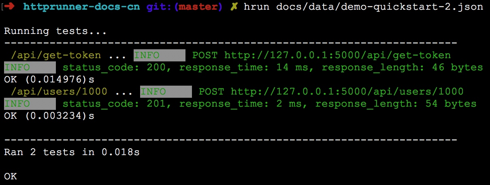
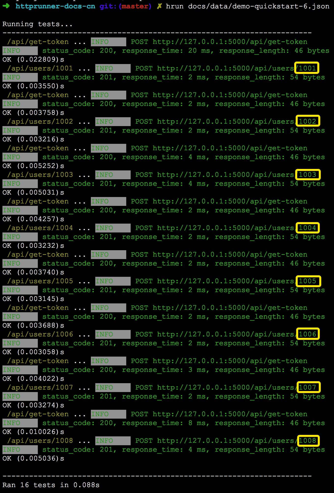

<!DOCTYPE html>
<html lang="en" class="no-js">
  <head>
    
      <meta charset="utf-8">
      <meta name="viewport" content="width=device-width,initial-scale=1">
      <meta http-equiv="x-ua-compatible" content="ie=edge">
      
      
      
      
        <meta name="lang:clipboard.copy" content="Copy to clipboard">
      
        <meta name="lang:clipboard.copied" content="Copied to clipboard">
      
        <meta name="lang:search.language" content="en">
      
        <meta name="lang:search.pipeline.stopwords" content="True">
      
        <meta name="lang:search.pipeline.trimmer" content="True">
      
        <meta name="lang:search.result.none" content="No matching documents">
      
        <meta name="lang:search.result.one" content="1 matching document">
      
        <meta name="lang:search.result.other" content="# matching documents">
      
        <meta name="lang:search.tokenizer" content="[\s\-]+">
      
      <link rel="shortcut icon" href="../assets/images/favicon.png">
      <meta name="generator" content="mkdocs-0.17.2, mkdocs-material-2.6.2">
    
    
      
        <title>快速上手 - HttpRunner 中文使用手册</title>
      
    
    
      <link rel="stylesheet" href="../assets/stylesheets/application.9b572555.css">
      
    
    
      <script src="../assets/javascripts/modernizr.1aa3b519.js"></script>
    
    
      
        <link rel="stylesheet" href="https://fonts.googleapis.com/css?family=Roboto:300,400,400i,700|Roboto+Mono">
        <style>body,input{font-family:"Roboto","Helvetica Neue",Helvetica,Arial,sans-serif}code,kbd,pre{font-family:"Roboto Mono","Courier New",Courier,monospace}</style>
      
      <link rel="stylesheet" href="https://fonts.googleapis.com/icon?family=Material+Icons">
    
    
    
  </head>
  
    <body dir="ltr">
  
    <svg class="md-svg">
      <defs>
        
        
      </defs>
    </svg>
    <input class="md-toggle" data-md-toggle="drawer" type="checkbox" id="drawer">
    <input class="md-toggle" data-md-toggle="search" type="checkbox" id="search">
    <label class="md-overlay" data-md-component="overlay" for="drawer"></label>
    
      <a href="#_1" tabindex="1" class="md-skip">
        Skip to content
      </a>
    
    
      <header class="md-header" data-md-component="header">
  <nav class="md-header-nav md-grid">
    <div class="md-flex">
      <div class="md-flex__cell md-flex__cell--shrink">
        <a href=".." title="HttpRunner 中文使用手册" class="md-header-nav__button md-logo">
          
            <i class="md-icon"></i>
          
        </a>
      </div>
      <div class="md-flex__cell md-flex__cell--shrink">
        <label class="md-icon md-icon--menu md-header-nav__button" for="drawer"></label>
      </div>
      <div class="md-flex__cell md-flex__cell--stretch">
        <div class="md-flex__ellipsis md-header-nav__title" data-md-component="title">
          
            
              <span class="md-header-nav__topic">
                HttpRunner 中文使用手册
              </span>
              <span class="md-header-nav__topic">
                快速上手
              </span>
            
          
        </div>
      </div>
      <div class="md-flex__cell md-flex__cell--shrink">
        
          
            <label class="md-icon md-icon--search md-header-nav__button" for="search"></label>
            
<div class="md-search" data-md-component="search" role="dialog">
  <label class="md-search__overlay" for="search"></label>
  <div class="md-search__inner" role="search">
    <form class="md-search__form" name="search">
      <input type="text" class="md-search__input" name="query" placeholder="Search" autocapitalize="off" autocorrect="off" autocomplete="off" spellcheck="false" data-md-component="query" data-md-state="active">
      <label class="md-icon md-search__icon" for="search"></label>
      <button type="reset" class="md-icon md-search__icon" data-md-component="reset" tabindex="-1">
        &#xE5CD;
      </button>
    </form>
    <div class="md-search__output">
      <div class="md-search__scrollwrap" data-md-scrollfix>
        <div class="md-search-result" data-md-component="result">
          <div class="md-search-result__meta">
            Type to start searching
          </div>
          <ol class="md-search-result__list"></ol>
        </div>
      </div>
    </div>
  </div>
</div>
          
        
      </div>
      
    </div>
  </nav>
</header>
    
    <div class="md-container">
      
        
      
      
      <main class="md-main">
        <div class="md-main__inner md-grid" data-md-component="container">
          
            
              <div class="md-sidebar md-sidebar--primary" data-md-component="navigation">
                <div class="md-sidebar__scrollwrap">
                  <div class="md-sidebar__inner">
                    <nav class="md-nav md-nav--primary" data-md-level="0">
  <label class="md-nav__title md-nav__title--site" for="drawer">
    <span class="md-nav__button md-logo">
      
        <i class="md-icon"></i>
      
    </span>
    HttpRunner 中文使用手册
  </label>
  
  <ul class="md-nav__list" data-md-scrollfix>
    
      
      
      


  <li class="md-nav__item">
    <a href=".." title="介绍" class="md-nav__link">
      介绍
    </a>
  </li>

    
      
      
      


  <li class="md-nav__item">
    <a href="../Installation/" title="安装说明" class="md-nav__link">
      安装说明
    </a>
  </li>

    
      
      
      

  


  <li class="md-nav__item md-nav__item--active">
    
    <input class="md-toggle md-nav__toggle" data-md-toggle="toc" type="checkbox" id="toc">
    
    
      <label class="md-nav__link md-nav__link--active" for="toc">
        快速上手
      </label>
    
    <a href="./" title="快速上手" class="md-nav__link md-nav__link--active">
      快速上手
    </a>
    
      
<nav class="md-nav md-nav--secondary">
  
  
  
    <label class="md-nav__title" for="toc">Table of contents</label>
    <ul class="md-nav__list" data-md-scrollfix>
      
        <li class="md-nav__item">
  <a href="#_1" title="案例介绍" class="md-nav__link">
    案例介绍
  </a>
  
</li>
      
        <li class="md-nav__item">
  <a href="#_2" title="测试准备" class="md-nav__link">
    测试准备
  </a>
  
    <nav class="md-nav">
      <ul class="md-nav__list">
        
          <li class="md-nav__item">
  <a href="#_3" title="抓包分析" class="md-nav__link">
    抓包分析
  </a>
  
</li>
        
          <li class="md-nav__item">
  <a href="#_4" title="生成测试用例" class="md-nav__link">
    生成测试用例
  </a>
  
</li>
        
          <li class="md-nav__item">
  <a href="#_5" title="首次运行测试用例" class="md-nav__link">
    首次运行测试用例
  </a>
  
</li>
        
      </ul>
    </nav>
  
</li>
      
        <li class="md-nav__item">
  <a href="#_6" title="优化测试用例" class="md-nav__link">
    优化测试用例
  </a>
  
    <nav class="md-nav">
      <ul class="md-nav__list">
        
          <li class="md-nav__item">
  <a href="#_7" title="调整校验器" class="md-nav__link">
    调整校验器
  </a>
  
</li>
        
          <li class="md-nav__item">
  <a href="#_8" title="参数关联" class="md-nav__link">
    参数关联
  </a>
  
</li>
        
          <li class="md-nav__item">
  <a href="#_9" title="公共配置全局化" class="md-nav__link">
    公共配置全局化
  </a>
  
</li>
        
          <li class="md-nav__item">
  <a href="#_10" title="变量的申明和引用" class="md-nav__link">
    变量的申明和引用
  </a>
  
</li>
        
          <li class="md-nav__item">
  <a href="#_11" title="数据参数化" class="md-nav__link">
    数据参数化
  </a>
  
</li>
        
          <li class="md-nav__item">
  <a href="#_12" title="数据驱动" class="md-nav__link">
    数据驱动
  </a>
  
</li>
        
      </ul>
    </nav>
  
</li>
      
        <li class="md-nav__item">
  <a href="#_13" title="查看测试报告" class="md-nav__link">
    查看测试报告
  </a>
  
</li>
      
      
      
      
      
    </ul>
  
</nav>
    
  </li>

    
      
      
      


  <li class="md-nav__item">
    <a href="../prepare-test/" title="准备测试用例" class="md-nav__link">
      准备测试用例
    </a>
  </li>

    
      
      
      


  <li class="md-nav__item">
    <a href="../data-driven/" title="数据驱动" class="md-nav__link">
      数据驱动
    </a>
  </li>

    
      
      
      


  <li class="md-nav__item">
    <a href="../testcase-layer/" title="测试用例分层" class="md-nav__link">
      测试用例分层
    </a>
  </li>

    
      
      
      


  <li class="md-nav__item">
    <a href="../run-test/" title="运行测试用例" class="md-nav__link">
      运行测试用例
    </a>
  </li>

    
      
      
      


  <li class="md-nav__item">
    <a href="../report/" title="测试报告" class="md-nav__link">
      测试报告
    </a>
  </li>

    
      
      
      


  <li class="md-nav__item">
    <a href="../load-test/" title="性能测试" class="md-nav__link">
      性能测试
    </a>
  </li>

    
      
      
      


  <li class="md-nav__item">
    <a href="../development/" title="开发文档" class="md-nav__link">
      开发文档
    </a>
  </li>

    
      
      
      


  <li class="md-nav__item">
    <a href="../FAQ/" title="常见问题" class="md-nav__link">
      常见问题
    </a>
  </li>

    
  </ul>
</nav>
                  </div>
                </div>
              </div>
            
            
              <div class="md-sidebar md-sidebar--secondary" data-md-component="toc">
                <div class="md-sidebar__scrollwrap">
                  <div class="md-sidebar__inner">
                    
<nav class="md-nav md-nav--secondary">
  
  
  
    <label class="md-nav__title" for="toc">Table of contents</label>
    <ul class="md-nav__list" data-md-scrollfix>
      
        <li class="md-nav__item">
  <a href="#_1" title="案例介绍" class="md-nav__link">
    案例介绍
  </a>
  
</li>
      
        <li class="md-nav__item">
  <a href="#_2" title="测试准备" class="md-nav__link">
    测试准备
  </a>
  
    <nav class="md-nav">
      <ul class="md-nav__list">
        
          <li class="md-nav__item">
  <a href="#_3" title="抓包分析" class="md-nav__link">
    抓包分析
  </a>
  
</li>
        
          <li class="md-nav__item">
  <a href="#_4" title="生成测试用例" class="md-nav__link">
    生成测试用例
  </a>
  
</li>
        
          <li class="md-nav__item">
  <a href="#_5" title="首次运行测试用例" class="md-nav__link">
    首次运行测试用例
  </a>
  
</li>
        
      </ul>
    </nav>
  
</li>
      
        <li class="md-nav__item">
  <a href="#_6" title="优化测试用例" class="md-nav__link">
    优化测试用例
  </a>
  
    <nav class="md-nav">
      <ul class="md-nav__list">
        
          <li class="md-nav__item">
  <a href="#_7" title="调整校验器" class="md-nav__link">
    调整校验器
  </a>
  
</li>
        
          <li class="md-nav__item">
  <a href="#_8" title="参数关联" class="md-nav__link">
    参数关联
  </a>
  
</li>
        
          <li class="md-nav__item">
  <a href="#_9" title="公共配置全局化" class="md-nav__link">
    公共配置全局化
  </a>
  
</li>
        
          <li class="md-nav__item">
  <a href="#_10" title="变量的申明和引用" class="md-nav__link">
    变量的申明和引用
  </a>
  
</li>
        
          <li class="md-nav__item">
  <a href="#_11" title="数据参数化" class="md-nav__link">
    数据参数化
  </a>
  
</li>
        
          <li class="md-nav__item">
  <a href="#_12" title="数据驱动" class="md-nav__link">
    数据驱动
  </a>
  
</li>
        
      </ul>
    </nav>
  
</li>
      
        <li class="md-nav__item">
  <a href="#_13" title="查看测试报告" class="md-nav__link">
    查看测试报告
  </a>
  
</li>
      
      
      
      
      
    </ul>
  
</nav>
                  </div>
                </div>
              </div>
            
          
          <div class="md-content">
            <article class="md-content__inner md-typeset">
              
                
                
                  <h1>快速上手</h1>
                
                <p>为了让大家快速掌握 HttpRunner 的核心功能，我设计了一个简单但比较典型的案例，向大家演示 HttpRunner 的使用方法。</p>
<h2 id="_1">案例介绍</h2>
<p>该案例作为被测服务，主要有两类接口：</p>
<ul>
<li>权限校验，获取 token</li>
<li>支持 CRUD 操作的 RESTful APIs，所有接口的请求头域中都必须包含有效的 token</li>
</ul>
<p>不难看出，该案例覆盖了自动化测试中的大部分场景，因此只要熟悉了该案例的自动化测试方法，应该就能应对项目中常见的自动化测试需求。</p>
<p>该案例文件存储于 HttpRunner 的单元测试目录中，路径为<code>tests/api_server.py</code>。</p>
<p>案例的实现形式为 flask 应用服务，启动方式如下：</p>
<pre><code class="text">$ export FLASK_APP=tests/api_server.py
$ flask run
 * Serving Flask app &quot;tests.api_server&quot;
 * Running on http://127.0.0.1:5000/ (Press CTRL+C to quit)
</code></pre>

<p>服务启动成功后，我们就可以开始对其进行测试了。</p>
<h2 id="_2">测试准备</h2>
<h3 id="_3">抓包分析</h3>
<p>在开始测试之前，我们需要先了解接口的请求和响应细节，而最佳的方式就是采用 <code>Charles Proxy</code> 或者 <code>Fiddler</code> 这类网络抓包工具进行抓包分析。</p>
<p>例如，在本案例中，我们先进行权限校验，然后成功创建一个用户，对应的网络抓包内容如下图所示：</p>
<p></p>
<p></p>
<p>通过抓包，我们可以看到具体的接口信息，包括请求的URL、Method、headers、参数和响应内容等内容，基于这些信息，我们就可以开始编写测试用例了。</p>
<h3 id="_4">生成测试用例</h3>
<p>为了简化测试用例的编写工作，HttpRunner 实现了测试用例生成的功能。</p>
<p>首先，需要将抓取得到的数据包导出为 HAR 格式的文件，假设导出的文件名称为 <a href="../data/demo-quickstart.har">demo-quickstart.har</a>。</p>
<p>然后，在命令行终端中运行如下命令，即可将 demo-quickstart.har 转换为 HttpRunner 的测试用例文件。</p>
<pre><code class="bash">$ har2case /path/to/demo-quickstart.har
INFO:root:Generate JSON testset successfully: /path/to/demo-quickstart.json
</code></pre>

<p>关于 <a href="https://github.com/HttpRunner/har2case">har2case</a> 的详细使用说明，请查看<a href="../advanced/#_2">进阶手册</a>。</p>
<p>经过转换，在源 demo-quickstart.har 文件的同级目录下生成了相同文件名称的 JSON 格式测试用例文件 <a href="../data/demo-quickstart.json">demo-quickstart.json</a>，其内容如下：</p>
<pre><code class="json">[
    {
        &quot;config&quot;: {
            &quot;name&quot;: &quot;testset description&quot;,
            &quot;variables&quot;: [],
            &quot;request&quot;: {
                &quot;base_url&quot;: &quot;&quot;,
                &quot;headers&quot;: {
                    &quot;User-Agent&quot;: &quot;python-requests/2.18.4&quot;
                }
            }
        }
    },
    {
        &quot;test&quot;: {
            &quot;name&quot;: &quot;/api/get-token&quot;,
            &quot;request&quot;: {
                &quot;url&quot;: &quot;http://127.0.0.1:5000/api/get-token&quot;,
                &quot;headers&quot;: {
                    &quot;device_sn&quot;: &quot;FwgRiO7CNA50DSU&quot;,
                    &quot;user_agent&quot;: &quot;iOS/10.3&quot;,
                    &quot;os_platform&quot;: &quot;ios&quot;,
                    &quot;app_version&quot;: &quot;2.8.6&quot;,
                    &quot;Content-Type&quot;: &quot;application/json&quot;
                },
                &quot;method&quot;: &quot;POST&quot;,
                &quot;json&quot;: {&quot;sign&quot;: &quot;958a05393efef0ac7c0fb80a7eac45e24fd40c27&quot;}
            },
            &quot;validate&quot;: [
                {&quot;eq&quot;: [&quot;status_code&quot;, 200]},
                {&quot;eq&quot;: [&quot;headers.Content-Type&quot;, &quot;application/json&quot;]},
                {&quot;eq&quot;: [&quot;content.success&quot;, true]},
                {&quot;eq&quot;: [&quot;content.token&quot;, &quot;baNLX1zhFYP11Seb&quot;]}
            ]
        }
    },
    {
        &quot;test&quot;: {
            &quot;name&quot;: &quot;/api/users/1000&quot;,
            &quot;request&quot;: {
                &quot;url&quot;: &quot;http://127.0.0.1:5000/api/users/1000&quot;,
                &quot;headers&quot;: {
                    &quot;device_sn&quot;: &quot;FwgRiO7CNA50DSU&quot;,
                    &quot;token&quot;: &quot;baNLX1zhFYP11Seb&quot;,
                    &quot;Content-Type&quot;: &quot;application/json&quot;
                },
                &quot;method&quot;: &quot;POST&quot;,
                &quot;json&quot;: {&quot;name&quot;: &quot;user1&quot;, &quot;password&quot;: &quot;123456&quot;}
            },
            &quot;validate&quot;: [
                {&quot;eq&quot;: [&quot;status_code&quot;, 201]},
                {&quot;eq&quot;: [&quot;headers.Content-Type&quot;, &quot;application/json&quot;]},
                {&quot;eq&quot;: [&quot;content.success&quot;, true]},
                {&quot;eq&quot;: [&quot;content.msg&quot;, &quot;user created successfully.&quot;]}
            ]
        }
    }
]
</code></pre>

<p>如上便是 HttpRunner 测试用例的基本结构。</p>
<p>现在我们只需要知道如下几点：</p>
<ul>
<li>每个 YAML/JSON 文件对应一个测试用例集（testset）</li>
<li>每个测试用例集为一个<code>list of dict</code>结构，其中可能包含全局配置项（config）和若干个测试用例（test）</li>
<li><code>config</code>为全局配置项，作用域为整个测试用例集</li>
<li><code>test</code>对应单个接口的测试用例，作用域仅限于本身</li>
</ul>
<p>关于测试用例的更多内容，请查看<a href="../testcase/">测试用例参考手册</a>。</p>
<h3 id="_5">首次运行测试用例</h3>
<p>既然现在已经有了测试用例文件，那么我们先尝试运行下吧。</p>
<p>为了演示测试用例文件的迭代优化过程，我们先将 demo-quickstart.json 重命名为 <a href="../data/demo-quickstart-0.json">demo-quickstart-0.json</a>。</p>
<p>运行测试用例的命令为<code>hrun</code>，后面直接指定测试用例文件的路径即可。</p>
<p></p>
<p>非常不幸，两个接口的测试用例均运行失败了。</p>
<h2 id="_6">优化测试用例</h2>
<p>从两个测试用例的报错信息和堆栈信息（Traceback）可以看出，第一个用例失败的原因是获取的 token 与预期值不一致，第二个用例失败的原因是请求权限校验失败（403）。</p>
<p>接下来我们将逐步进行进行优化。</p>
<h3 id="_7">调整校验器</h3>
<p>默认情况下，<a href="https://github.com/HttpRunner/har2case">har2case</a> 生成用例时，若 HTTP 请求的响应内容为 JSON 格式，则会将第一层级中的所有<code>key-value</code>转换为 validator。</p>
<p>例如上面的第一个测试用例，生成的 validator 为：</p>
<pre><code class="json">&quot;validate&quot;: [
    {&quot;eq&quot;: [&quot;status_code&quot;, 200]},
    {&quot;eq&quot;: [&quot;headers.Content-Type&quot;, &quot;application/json&quot;]},
    {&quot;eq&quot;: [&quot;content.success&quot;, true]},
    {&quot;eq&quot;: [&quot;content.token&quot;, &quot;baNLX1zhFYP11Seb&quot;]}
]
</code></pre>

<p>运行测试用例时，就会对上面的各个项进行校验。</p>
<p>问题在于，请求<code>/api/get-token</code>接口时，每次生成的 token 都会是不同的，因此将生成的 token 作为校验项的话，校验自然就无法通过了。</p>
<p>正确的做法是，在测试用例的 validate 中应该去掉这类动态变化的值。</p>
<p>去除该项后，将用例另存为 <a href="../data/demo-quickstart-1.json">demo-quickstart-1.json</a>。</p>
<p>再次运行测试用例，运行结果如下：</p>
<p></p>
<p>经过修改，第一个测试用例已经运行成功了，第二个用例仍然运行失败（403），还是因为权限校验的原因。</p>
<h3 id="_8">参数关联</h3>
<p>我们继续查看 <a href="../data/demo-quickstart-1.json">demo-quickstart-1.json</a>，会发现第二个测试用例的请求 headers 中的 token 仍然是硬编码的，即抓包时获取到的值。在我们再次运行测试用例时，这个 token 已经失效了，所以会出现 403 权限校验失败的问题。</p>
<p>正确的做法是，我们应该在每次运行测试用例的时候，先动态获取到第一个测试用例中的 token，然后在后续测试用例的请求中使用前面获取到的 token。</p>
<p>在 HttpRunner 中，支持参数提取（<code>extract</code>）和参数引用的功能（<code>$var</code>）。</p>
<p>在测试用例（test）中，若需要从响应结果中提取参数，则可使用 extract 关键字。extract 的列表中可指定一个或多个需要提取的参数。</p>
<p>在提取参数时，当 HTTP 的请求响应结果为 JSON 格式，则可以采用<code>.</code>运算符的方式，逐级往下获取到参数值；响应结果的整体内容引用方式为 content 或者 body。</p>
<p>例如，第一个接口<code>/api/get-token</code>的响应结果为：</p>
<pre><code class="json">{&quot;success&quot;: true, &quot;token&quot;: &quot;ZQkYhbaQ6q8UFFNE&quot;}
</code></pre>

<p>那么要获取到 token 参数，就可以使用 content.token 的方式；具体的写法如下：</p>
<pre><code class="json">&quot;extract&quot;: [
    {&quot;token&quot;: &quot;content.token&quot;}
]
</code></pre>

<p>其中，token 作为提取后的参数名称，可以在后续使用<code>$token</code>进行引用。</p>
<pre><code class="json">&quot;headers&quot;: {
    &quot;device_sn&quot;: &quot;FwgRiO7CNA50DSU&quot;,
    &quot;token&quot;: &quot;$token&quot;,
    &quot;Content-Type&quot;: &quot;application/json&quot;
}
</code></pre>

<p>修改后的测试用例另存为 <a href="../data/demo-quickstart-2.json">demo-quickstart-2.json</a>。</p>
<p>再次运行测试用例，运行结果如下：</p>
<p></p>
<p>经过修改，第二个测试用例也运行成功了。</p>
<h3 id="_9">公共配置全局化</h3>
<p>虽然测试用例运行都成功了，但是仍然有继续优化的地方。</p>
<p>继续查看 <a href="../data/demo-quickstart-2.json">demo-quickstart-2.json</a>，我们会发现测试用例中仍然存在重复描述的地方。例如，在两个测试用例的 headers 中都存在 device_sn 和 Content-Type 字段，并且它们的值都相同；在每条测试用例的 URL 中，都采用的是完整的描述（host+path），但大多数情况下同一个用例集中的 host 都是相同的，区别仅在于 path 部分。</p>
<p>因此，我们可以将各个测试用例（test）中公共的部分抽取出来，放到全局配置模块（config）中进行描述。</p>
<p>将 device_sn、Content-Type 字段以及 host 抽取出来放置到 config 中后，config如下所示：</p>
<pre><code class="json">{
    &quot;config&quot;: {
        &quot;name&quot;: &quot;testset description&quot;,
        &quot;variables&quot;: [],
        &quot;base_url&quot;: &quot;http://127.0.0.1:5000&quot;,
        &quot;headers&quot;: {
            &quot;User-Agent&quot;: &quot;python-requests/2.18.4&quot;,
            &quot;device_sn&quot;: &quot;FwgRiO7CNA50DSU&quot;,
            &quot;Content-Type&quot;: &quot;application/json&quot;
        }
    }
}
</code></pre>

<p>其中，host 部分对应 config 中的 base_url。调整后的测试用例另存为 <a href="../data/demo-quickstart-3.json">demo-quickstart-3.json</a>。</p>
<p>重启 flask 应用服务后再次运行测试用例，所有的测试用例仍然运行成功。</p>
<h3 id="_10">变量的申明和引用</h3>
<p>继续查看 <a href="../data/demo-quickstart-3.json">demo-quickstart-3.json</a>，我们会发现测试用例中存在较多硬编码的参数，例如 config 模块中的 device_sn，第一条测试用例中的 user_agent、os_platform、app_version，第二条测试用例中的 user_id 等。</p>
<p>大多数情况下，我们可以不用修改这些硬编码的参数，测试用例也能正常运行。但是为了更好地维护测试用例，例如同一个参数值在测试用例中出现多次，那么比较好的做法是，将这些参数定义为变量，然后在需要参数的地方进行引用。</p>
<p>在 HttpRunner 中，支持变量申明（<code>variables</code>）和引用（<code>$var</code>）的机制。在 config 和 test 中均可以通过 variables 关键字定义变量，然后在测试用例中可以通过 <code>$ + 变量名称</code> 的方式引用变量。区别在于，在 config 中定义的变量为全局的，整个测试用例集（testset）的所有地方均可以引用；在 test 中定义的变量作用域仅局限于当前测试用例（testcase）。</p>
<p>对上述硬编码的参数进行变量申请和引用调整后，新的测试用例集另存为 <a href="../data/demo-quickstart-4.json">demo-quickstart-4.json</a>。</p>
<p>重启 flask 应用服务后再次运行测试用例，所有的测试用例仍然运行成功。</p>
<h3 id="_11">数据参数化</h3>
<p>在 <a href="../data/demo-quickstart-4.json">demo-quickstart-4.json</a> 中，参数 device_sn 代表的是设备的 SN 编码，虽然采用硬编码的方式暂时不影响测试用例的运行，但这与真实的用户场景不大相符。</p>
<p>在真实场景中，每个用户的 device_sn 都是不同的，因此我们在测试用例中也应该对其进行参数化；假设 device_sn 的格式为 15 长度的字符串，那么我们就可以在每次运行测试用例的时候，针对 device_sn 生成一个 15 位长度的随机字符串。与此同时，sign 字段是根据 headers 中的各个字段拼接后生成得到的 MD5 值，因此在 device_sn 变动后，sign 也应该重新进行计算，否则就会再次出现签名校验失败的问题。</p>
<p>然而，HttpRunner 的测试用例都是采用 YAML/JSON 格式进行描述的，在文本格式中如何执行代码运算呢？</p>
<p>HttpRunner 的实现方式为，支持热加载的插件机制（<code>debugtalk.py</code>），可以在 YAML/JSON 中调用 Python 函数。</p>
<p>具体地做法，我们可以在测试用例文件的同级或其父级目录中创建一个 debugtalk.py 文件，然后在其中定义相关的函数和变量。</p>
<p>例如，针对 device_sn 的随机字符串生成功能，我们可以定义一个 gen_random_string 函数；针对 sign 的签名算法，我们可以定义一个 get_sign 函数。</p>
<pre><code class="python">import hashlib
import hmac
import random
import string

SECRET_KEY = &quot;DebugTalk&quot;

def gen_random_string(str_len):
    random_char_list = []
    for _ in range(str_len):
        random_char = random.choice(string.ascii_letters + string.digits)
        random_char_list.append(random_char)

    random_string = ''.join(random_char_list)
    return random_string

def get_sign(*args):
    content = ''.join(args).encode('ascii')
    sign_key = SECRET_KEY.encode('ascii')
    sign = hmac.new(sign_key, content, hashlib.sha1).hexdigest()
    return sign
</code></pre>

<p>然后，我们在 YAML/JSON 测试用例文件中，就可以对定义的函数进行调用，对定义的变量进行引用了。引用变量的方式仍然与前面讲的一样，采用<code>$ + 变量名称</code>的方式；调用函数的方式为<code>${func($var)}</code>。</p>
<p>例如，生成 15 位长度的随机字符串并赋值给 device_sn 的代码为：</p>
<pre><code class="json">&quot;variables&quot;: [
    {&quot;device_sn&quot;: &quot;${gen_random_string(15)}&quot;}
]
</code></pre>

<p>使用 $user_agent、$device_sn、$os_platform、$app_version 根据签名算法生成 sign 值的代码为：</p>
<pre><code class="json">&quot;json&quot;: {
    &quot;sign&quot;: &quot;${get_sign($user_agent, $device_sn, $os_platform, $app_version)}&quot;
}
</code></pre>

<p>对测试用例进行上述调整后，另存为 <a href="../data/demo-quickstart-5.json">demo-quickstart-5.json</a>。</p>
<p>重启 flask 应用服务后再次运行测试用例，所有的测试用例仍然运行成功。</p>
<h3 id="_12">数据驱动</h3>
<p>在 <a href="../data/demo-quickstart-5.json">demo-quickstart-5.json</a> 中，user_id 仍然是写死的值，假如我们需要创建 user_id 为 1001～1008 的用户，那我们只能不断地去修改 user_id，然后运行测试用例，重复操作 8 次？或者我们在测试用例文件中将创建用户的 test 复制 8 份，然后在每一份里面分别使用不同的 user_id ？</p>
<p>很显然，不管是采用上述哪种方式，都会很繁琐，并且也无法应对灵活多变的测试需求。</p>
<p>针对这类需求，HttpRunner 支持参数化数据驱动的功能。</p>
<p>在 HttpRunner 中，若要采用数据驱动的方式来运行测试用例，只需要两步操作：参数定义和数据源准备。</p>
<p>定义参数时，需要使用 parameters 关键字，需要参数化的参数名称和参数取值方式均定义在其中。</p>
<p>例如，我们需要对 user_id 进行参数化，并且取值方式为顺序取值，那么描述方式就为如下形式：</p>
<pre><code class="json">&quot;config&quot;: {
    &quot;parameters&quot;: [
        {&quot;user_id&quot;: &quot;Sequential&quot;}
    ]
}
</code></pre>

<p>然后是准备参数的数据源。约定采用<code>.csv</code>文件格式来存储参数列表，文件名称需要与参数名称保持一致，并且将文件放置在测试用例文件的同级目录中。同时，约定在<code>.csv</code>文件中的第一行必须为参数名称；从第二行开始为参数值，每个值占一行；参数名称和数值之间采用逗号进行分隔。</p>
<p>例如，user_id 的参数取值范围为 1001～1008，那么我们就可以创建 <a href="../data/user_id.csv">user_id.csv</a>，并且在文件中按照如下形式进行描述。</p>
<pre><code class="csv">user_id
1001
1002
1003
1004
1005
1006
1007
1008
</code></pre>

<p>完成以上两步后，针对 user_id 的参数化数据驱动就完成了。</p>
<p>将经过调整的测试用例另存为 <a href="../data/demo-quickstart-6.json">demo-quickstart-6.json</a>，重启 flask 应用服务后再次运行测试用例，测试用例运行情况如下所示：</p>
<p></p>
<p>可以看出，测试用例集总共运行了 8 次，并且每次运行时都是采用的不同 user_id。</p>
<p>关于数据驱动，这里只描述了最简单的场景，如需了解更多，请进一步阅读<a href="../data-driven/">《数据驱动使用手册》</a>。</p>
<h2 id="_13">查看测试报告</h2>
<p>在每次使用 hrun 命令运行测试用例后，均会生成一份 HTML 格式的测试报告。报告文件位于 reports 目录下，文件名称为测试用例的开始运行时间。</p>
<p>报告展现形式为：</p>
<p>
</p>
<p>到此为止，HttpRunner 的核心功能就介绍完了，掌握本文中的功能特性，足以帮助你应对日常项目工作中至少 80% 的自动化测试需求。</p>
<p>当然，HttpRunner 不止于此，如需挖掘 HttpRunner 的更多特性，解决更复杂场景的自动化测试需求，可继续阅读后续文档。</p>
                
                  
                
              
              
                
              
            </article>
          </div>
        </div>
      </main>
      
        
<footer class="md-footer">
  
    <div class="md-footer-nav">
      <nav class="md-footer-nav__inner md-grid">
        
          <a href="../Installation/" title="安装说明" class="md-flex md-footer-nav__link md-footer-nav__link--prev" rel="prev">
            <div class="md-flex__cell md-flex__cell--shrink">
              <i class="md-icon md-icon--arrow-back md-footer-nav__button"></i>
            </div>
            <div class="md-flex__cell md-flex__cell--stretch md-footer-nav__title">
              <span class="md-flex__ellipsis">
                <span class="md-footer-nav__direction">
                  Previous
                </span>
                安装说明
              </span>
            </div>
          </a>
        
        
          <a href="../prepare-test/" title="准备测试用例" class="md-flex md-footer-nav__link md-footer-nav__link--next" rel="next">
            <div class="md-flex__cell md-flex__cell--stretch md-footer-nav__title">
              <span class="md-flex__ellipsis">
                <span class="md-footer-nav__direction">
                  Next
                </span>
                准备测试用例
              </span>
            </div>
            <div class="md-flex__cell md-flex__cell--shrink">
              <i class="md-icon md-icon--arrow-forward md-footer-nav__button"></i>
            </div>
          </a>
        
      </nav>
    </div>
  
  <div class="md-footer-meta md-typeset">
    <div class="md-footer-meta__inner md-grid">
      <div class="md-footer-copyright">
        
        powered by
        <a href="http://www.mkdocs.org">MkDocs</a>
        and
        <a href="https://squidfunk.github.io/mkdocs-material/">
          Material for MkDocs</a>
      </div>
      
        
      
    </div>
  </div>
</footer>
      
    </div>
    
      <script src="../assets/javascripts/application.abd7b172.js"></script>
      
      <script>app.initialize({version:"0.17.2",url:{base:".."}})</script>
      
    
    
      
    
  </body>
</html>